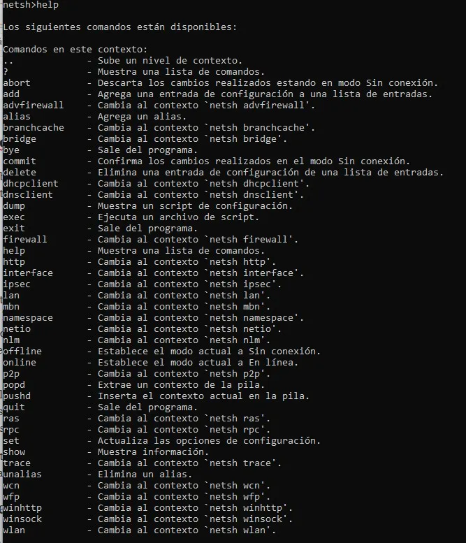

📌 ¿Qué son los comandos de sistema de archivos?
Son instrucciones que escribimos en el Símbolo del sistema (CMD) para interactuar directamente con los archivos y carpetas del sistema operativo. A diferencia del explorador gráfico, aquí todo es por texto, pero es mucho más rápido para tareas repetitivas o avanzadas.
🛠️ Comandos básicos que aprendí
- systeminfo – Muestra información detallada del equipo (SO, RAM, red).
- dir – Lista archivos y carpetas del directorio actual.
- cd – Cambia de directorio. Ej:
cd Desktop. - md – Crea una carpeta nueva. Ej:
md UMGLab1. - cd.. – Sube un nivel en el árbol de carpetas.
- tree – Muestra gráficamente el árbol de directorios.
- copy con – Crea un archivo de texto desde la terminal.
📌 Ejemplo práctico (propio)
En mi laboratorio real, tuve que crear esta estructura:
C:\Users\UMG> md UMGLab1
C:\Users\UMG> md UMGLab2
C:\Users\UMG> cd UMGLab2
C:\Users\UMG\UMGLab2> md UMGLab4\UMGLab5\UMGLab6
C:\Users\UMG\UMGLab2> tree
├───UMGLab4
│ └───UMGLab5
│ └───UMGLab6
Luego usé copy con Hola.txt para escribir un texto sobre PowerShell. Esa experiencia me enseñó a manipular archivos sin necesidad de ratón.
Recurso de multimedia

Imagen ilustrativa de una terminal CMD (fuente: IONOS).
💭 Reflexión personal
¿Por qué elegí este tema? Porque al principio me daba miedo la "pantalla negra" llena de texto, pero cuando entendí que cada comando hace algo concreto, me sentí como un hacker real. Además, es la base para administrar servidores sin interfaz gráfica.
¿Dónde se aplica? En la vida laboral, los administradores de sistemas usan CMD o PowerShell a diario para instalar software, crear backups, diagnosticar redes o automatizar tareas. Incluso en entornos Linux se usan comandos similares.